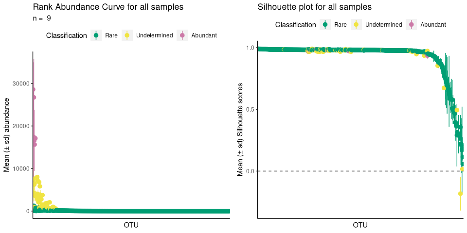

The R package ulrb stands for Unsupervised Machine Learning definition of the Rare Biosphere. As the name suggests, it applies unsupervised learning principles to define the rare biosphere.
More specifically, the partitioning around medoids (k-medoids) algorithm is used to divide phylogenetic units (ASVs, OTUs, Species, …) within a microbial community (usually, a sample) into clusters. The clusters are then ordered based on a user-defined classification vector. By default, our method classifies all phylogenetic units in one of these: “rare”, “undetermined” or “abundant”. In alternative, we provide functions to help the user decide the number of clusters and we also provide a fully automated option. Besides clustering, we have functions to help you evaluate the clustering quality (e.g. silhouette scores).
For detailed theory behind our reasoning for this definition of the microbial rare biosphere, results and applications, see our paper Pascoal et al., 2023 (in preparation). For more details on the R functions used and data wrangling please see the package documentation.
For tutorials and documentation of the urlb package, visit our website: link.
Note: the article to cite ulrb is in preparation for submission
Installation
You can install the development version of ulrb from GitHub with:
# install.packages("devtools")
devtools::install_github("pascoalf/ulrb")We are working on a CRAN publication. We will then provide instructions for CRAN installation.
Example
This is a basic example which shows you how to use ulrb to divide phylogenetic units into three classifications (rare, undetermined and abundant):
library(ulrb)
## basic example
define_rb(nice_tidy)
#> Joining with `by = join_by(Sample, Level)`
#> # A tibble: 2,177 × 17
#> # Groups: Sample, Classification [27]
#> Sample Classification OTU Domain Phylum Class Order Family Genus Species
#> <chr> <fct> <chr> <chr> <chr> <chr> <chr> <chr> <chr> <chr>
#> 1 ERR20446… Rare OTU_2 sk__A… p__Eu… c__C… <NA> <NA> <NA> <NA>
#> 2 ERR20446… Rare OTU_5 sk__A… p__Eu… c__T… <NA> <NA> <NA> <NA>
#> 3 ERR20446… Rare OTU_6 sk__A… p__Th… <NA> <NA> <NA> <NA> <NA>
#> 4 ERR20446… Rare OTU_7 sk__A… p__Th… c__ o__ f__ g__C… <NA>
#> 5 ERR20446… Rare OTU_8 sk__A… p__Th… c__ o__N… <NA> <NA> <NA>
#> 6 ERR20446… Rare OTU_… sk__A… p__Th… c__ o__N… f__Ni… g__N… <NA>
#> 7 ERR20446… Rare OTU_… sk__B… p__Ac… <NA> <NA> <NA> <NA> <NA>
#> 8 ERR20446… Rare OTU_… sk__B… p__Ac… c__A… o__A… <NA> <NA> <NA>
#> 9 ERR20446… Rare OTU_… sk__B… p__Ac… <NA> <NA> <NA> <NA> <NA>
#> 10 ERR20446… Rare OTU_… sk__B… p__Ac… c__A… <NA> <NA> <NA> <NA>
#> # ℹ 2,167 more rows
#> # ℹ 7 more variables: Abundance <int>, pam_object <list>, Level <fct>,
#> # Silhouette_scores <dbl>, Cluster_median_abundance <dbl>,
#> # median_Silhouette <dbl>, Evaluation <chr>With ulrb, you can also format your original species table, get an automatic number of clusters and plot the results:
# nice is an OTU table in wide format
head(nice)
#> ERR2044662 ERR2044663 ERR2044664 ERR2044665 ERR2044666 ERR2044667 ERR2044668
#> 1 165 323 51 70 134 216 0
#> 2 0 0 1 0 0 1 0
#> 3 0 0 1 2 2 6 0
#> 4 541 1018 351 115 241 1633 177
#> 5 8 5 41 15 14 146 0
#> 6 15 31 590 133 174 1814 12
#> ERR2044669 ERR2044670 OTU Domain Phylum
#> 1 11 0 OTU_2 sk__Archaea p__Euryarchaeota
#> 2 0 0 OTU_3 sk__Archaea p__Euryarchaeota
#> 3 0 0 OTU_4 sk__Archaea p__Euryarchaeota
#> 4 1371 7 OTU_5 sk__Archaea p__Euryarchaeota
#> 5 14 0 OTU_6 sk__Archaea p__Thaumarchaeota
#> 6 173 2 OTU_7 sk__Archaea p__Thaumarchaeota
#> Class Order Family
#> 1 c__Candidatus_Poseidoniia <NA> <NA>
#> 2 c__Candidatus_Poseidoniia o__Candidatus_Poseidoniales f__
#> 3 c__Halobacteria o__Halobacteriales <NA>
#> 4 c__Thermoplasmata <NA> <NA>
#> 5 <NA> <NA> <NA>
#> 6 c__ o__ f__
#> Genus Species
#> 1 <NA> <NA>
#> 2 g__ s__Marine_group_II_euryarchaeote_REDSEA-S03_B6
#> 3 <NA> <NA>
#> 4 <NA> <NA>
#> 5 <NA> <NA>
#> 6 g__Candidatus_Nitrosopelagicus <NA>
# first, we tidy the "nice" OTU table
sample_names <- c("ERR2044662", "ERR2044663", "ERR2044664",
"ERR2044665", "ERR2044666", "ERR2044667",
"ERR2044668", "ERR2044669", "ERR2044670")
# If data is in wide format, with samples in cols
nice_tidy <- prepare_tidy_data(nice,
sample_names = sample_names,
samples_in = "cols")
# second, we apply ulrb algorithm in automatic setting
nice_classification_results <- define_rb(nice_tidy)
#> Joining with `by = join_by(Sample, Level)`
# third, we plot microbial community and the quality of k-medoids clustering
plot_ulrb(nice_classification_results, taxa_col = "OTU", plot_all = TRUE)
#> Warning: Removed 197 rows containing missing values (`geom_segment()`).
#> Removed 197 rows containing missing values (`geom_segment()`).
# In case you want to inspect the result of a particular sample, do:
plot_ulrb(nice_classification_results, taxa_col = "OTU", sample_id = "ERR2044662")